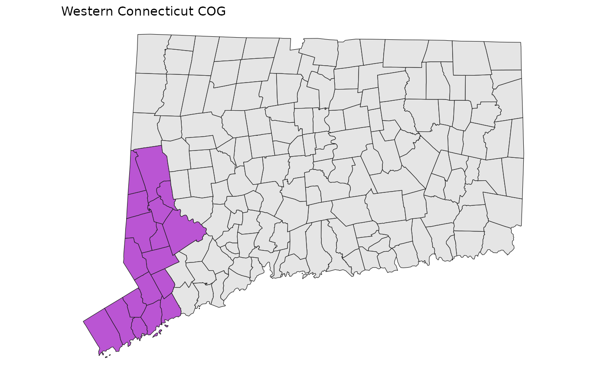
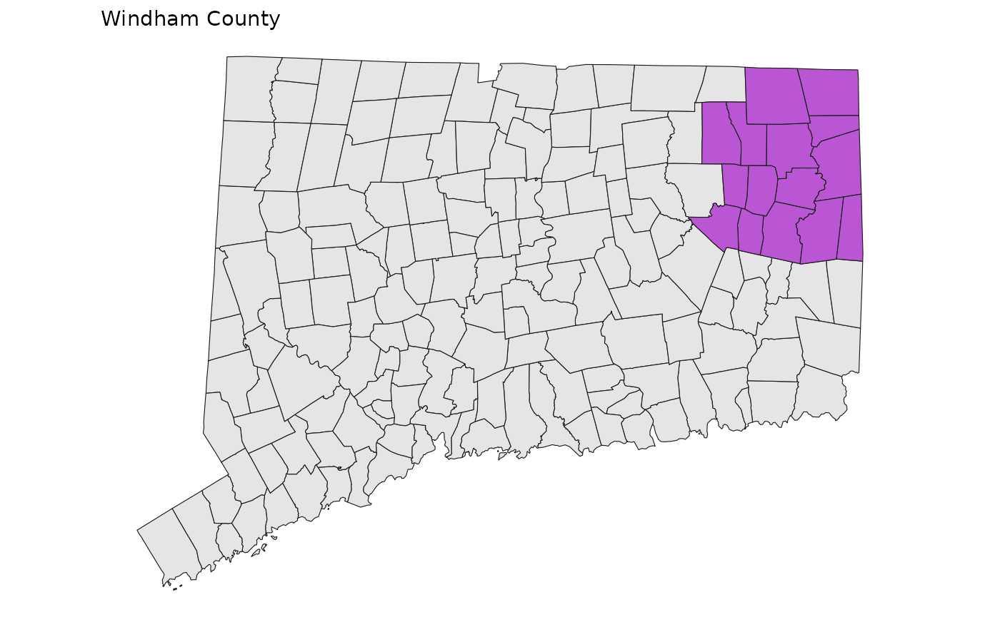
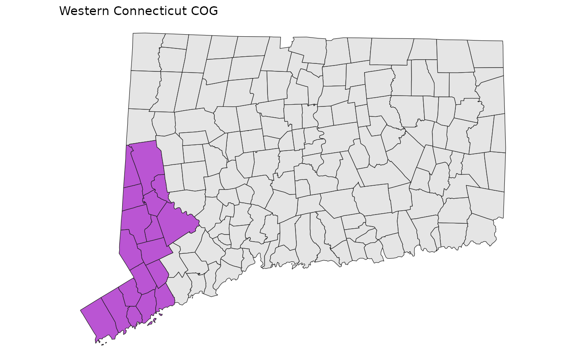
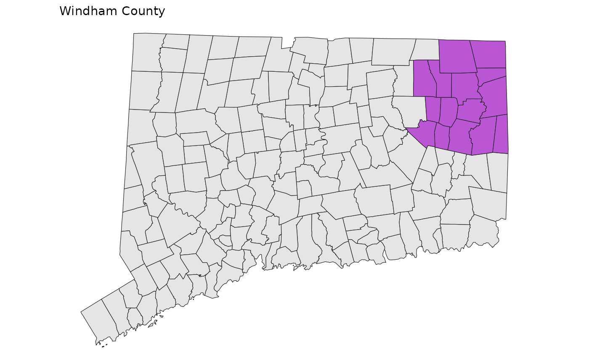

library(sf)
#> Linking to GEOS 3.12.1, GDAL 3.8.4, PROJ 9.4.0; sf_use_s2() is TRUE
library(cwi)
library(ggplot2)
theme_set(theme_void() + theme(plot.title = element_text(size = 11)))There are too many regions stored here now that the state is switching to COGs instead of counties. Here’s a visual reference to them. Note that Greater Hartford and the Capitol Region COG are the same, as are Greater Bridgeport and Connecticut Metro COG.


 
